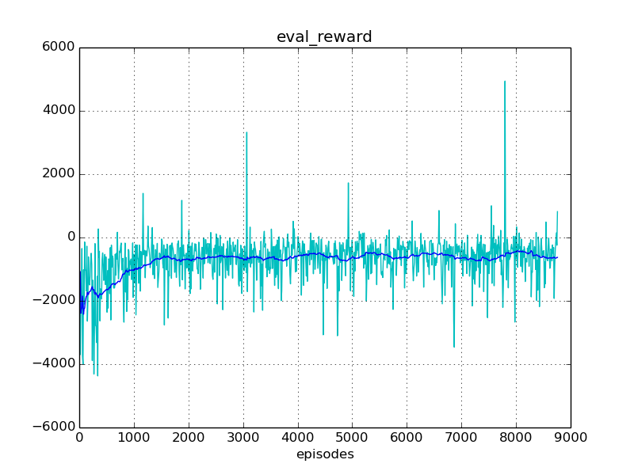
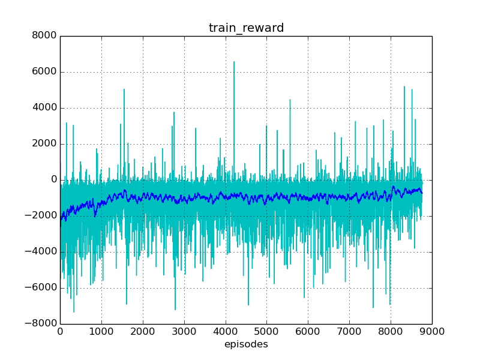
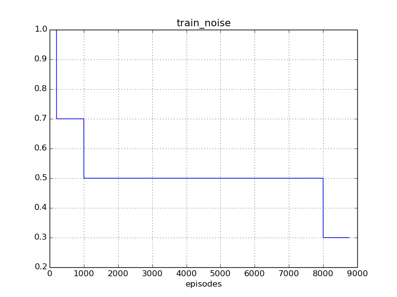
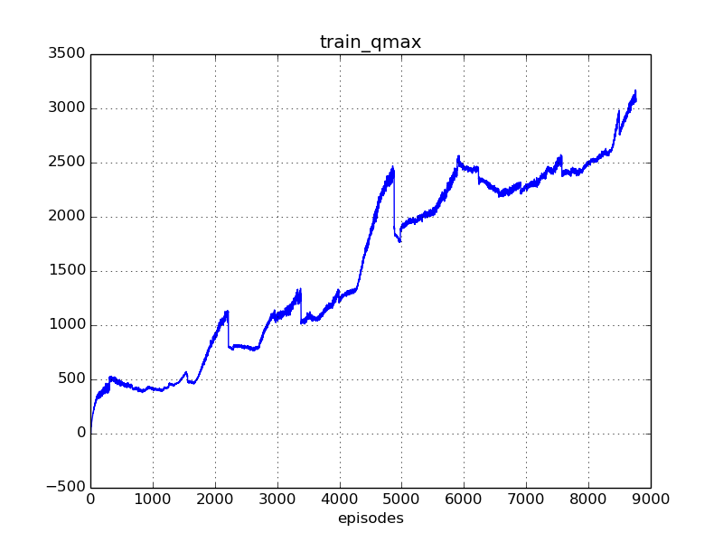

Experiment #003_2
Reward: -605
Qmax: 3097
Left: 09:17:29 (44%)
Report time: 2016-12-10 22:37:25
Host name: bernard
Configuration
Experiment:
exp.base_path: ../out/experiments
exp.episodes: 20000
exp.save_every_episodes: 200
exp.steps: 75
Algorithm:
alg.batch_size: 1024
alg.buffer_size: 50000
alg.noise_rate_method: staircase_5
alg.noise_sigma: 0.1
alg.noise_theta: 0.01
Mind:
mind.evaluate_every_episodes: 10
Environment:
env.model_agent_path: ../env/assets/tentacle_agent.xml
env.model_world_path: ../env/assets/tentacle_world.xml
env.reward_method: default_reward
env.target_location_method: random_target
env.target_mouse_control: False
env.target_range_xz: [1.5, 1.0]
Reporting:
report.diagram_mean_frame: 50
report.refrech_html_every_secs: 30
report.summary_every_episodes: 20
report.write_every_episodes: 5
Instances
Experiment:
id: 003_2
init_id: 003_2
proc: TrainProc:
platform: TensorflowPlatform
world: TentacleWorld:
id: Zoo:Mujoco:Tentacle-v1
model_path: ../env/assets/tentacle_world.xml
obs_dim: 10
act_box: [-200. -150. -50.]
[ 200. 150. 50.]
agent: MujocoAgent:
model_path: ../env/assets/tentacle_agent.xml
mind: DdpgMind:
algorithm: DDPG_PeterKovacs
buffer: ReplayBuffer:
buffer_size: 50000
num_experiences: 50000
episode: 8764
reporter: Reporter:
saved_time: 00:18:28
train_history: 8765
evaluation_history: 875
Progress
Episodes: 8765
Steps: 657375
Total time: 16:32:24
spent: 07:14:55 (43%)
left: 09:17:29
Finish: 07:54:54 2016-12-11
Performance: 0.34 per sec
Results
Train reward: -724.80
Eval reward: -605.05
Diagrams



